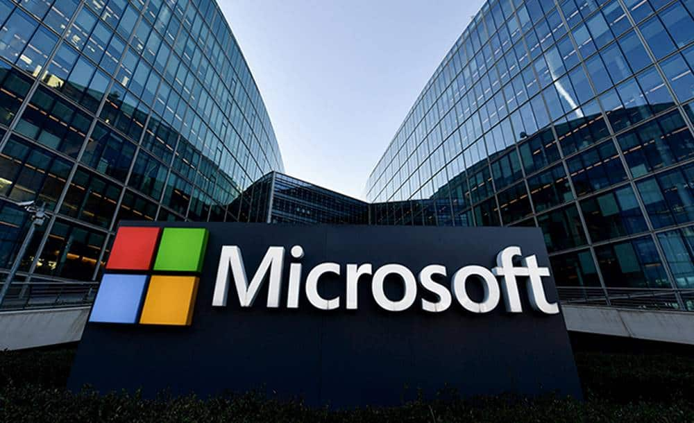

Segmento de IA da Microsoft tem tido bastantes críticas positivas e adoção por parte dos clientes, e o mercado prevê um bom presságio para o futuro.
A Microsoft pode estar prestes a ter o seu próprio "momento iPhone". E o que é isso? O momento em que tudo
muda e a empresa
ganha um novo "significado".
Tudo pode estar a mudar para a Microsoft com a chegada do CoPilot, a sua nova ferramenta de Inteligência
Artificial. Para o
analista Dan Ives da Wedbush, citado pela “Business Insider”, o CoPilot vai mudar a trajetória de
crescimento da empresa.
“Vemos este como o "momento iPhone" para a Microsoft, com a Inteligência Artificial a mudar o rumo da
trajetória do
crescimento da cloud nos próximos anos”, disse o analista.
O segmento de IA da Microsoft tem tido bastantes críticas positivas e adoção por parte dos clientes, e o
mercado prevê um bom
presságio para o futuro, com o otimismo a fazer-se sentir na monetarização do produto e uma subida em bolsa.
De facto, o potencial das ferramentas de IA da Microsoft levou a Wedbush e elevar o preço-alvo da empresa,
passando dos 425
dólares atuais para 450 dólares. Trata-se de um potencial revisto em alta na ordem dos 21% face aos níveis
atuais.
“Com base no nosso trabalho, acreditamos que, nos próximos três anos, mais de 60% da base instalada da
Microsoft estará nesta
ferramenta de IA para empresas”, apontou Dan Ives à publicação norte-americana.
Mas os case studies do chatbot desta IA só devem ser divulgados nos próximos seis meses, significando que a
Microsoft só deve
observar o seu ponto de inflexão (mudança) para 2025.
“Acreditamos que as ações ainda precisam de se certificar o que vemos como a próxima vaga de crescimento de
cloud e IA a chegar
a Redmond (campus da Microsoft), com fortes concorrentes na cloud como a Amazon e a Google”, explica Ives.
No entanto, o analista detalha que o CoPilot pode adicionar 25 mil milhões de dólares às receitas da empresa
fundada por Bill
Gates no próximo ano. “Estimamos que por cada 100 dólares gastos em cloud na Microsoft nos últimos anos, há
um aumento de 35 a
40 dólares de gastos com a IA. Isto significa que Nadella [CEO] e a empresa estão a olhar para o futuro”.